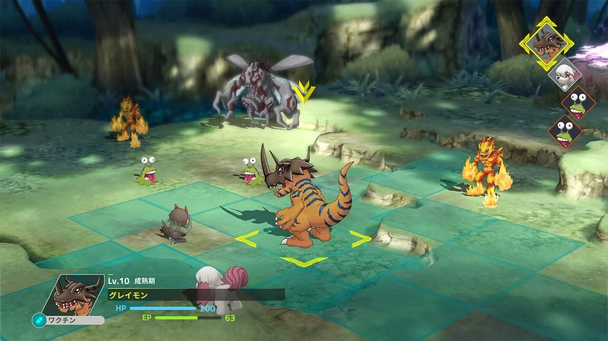
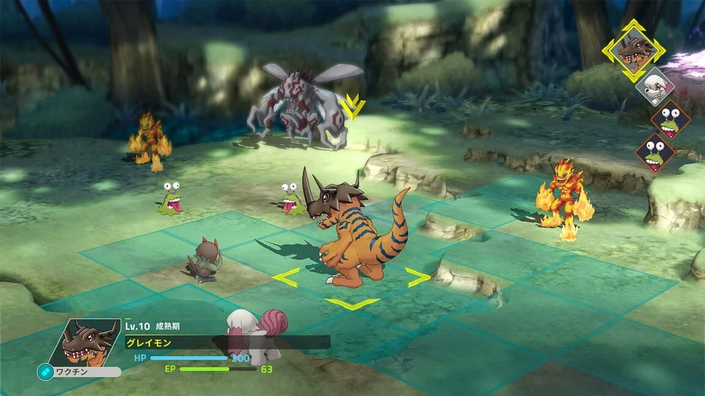

Digimon Survive: Uma Jornada de Sobrevivência e Amizade
Os jogadores embarcam em uma emocionante aventura que ultrapassa os limites da realidade e do digital. No papel de Takuma, um estudante do 8º ano, os jogadores se veem envolvidos em um enredo intrigante durante um acampamento de Estudos Históricos extracurriculares. Ao explorar um antigo templo associado a lendas de desaparecimentos misteriosos, Takuma e seus colegas são transportados para um mundo totalmente novo e desconhecido....
Neste reino enigmático, os protagonistas se deparam com desafios perigosos, criaturas digitais fascinantes e segredos ocultos. Cada escolha feita pelos jogadores influencia diretamente o curso da história, moldando relacionamentos, determinando aliados e afetando o destino de Takuma e seus amigos. A narrativa cativante explora temas de amizade, coragem e o confronto entre o mundo real e o digital.
A jogabilidade de "Digimon Survive" combina elementos de visual novel, estratégia tática e aventura. Os jogadores precisam tomar decisões sábias durante diálogos interativos, influenciando o desenvolvimento dos personagens e desbloqueando diferentes caminhos narrativos. Em batalhas táticas, os parceiros Digimon de cada personagem entram em ação, permitindo que os jogadores usem suas habilidades únicas para derrotar inimigos digitais e resolver quebra-cabeças desafiadores.
Ao longo da jornada, os jogadores descobrirão a verdade por trás dos mistérios do mundo digital, enfrentando escolhas difíceis que testarão sua moral e determinação. Com gráficos envolventes, uma trilha sonora emocionante e um enredo rico em reviravoltas, "Digimon Survive" oferece uma experiência única e imersiva, explorando o equilíbrio delicado entre a realidade e o reino digital. Está preparado para sobreviver a esse extraordinário desafio?